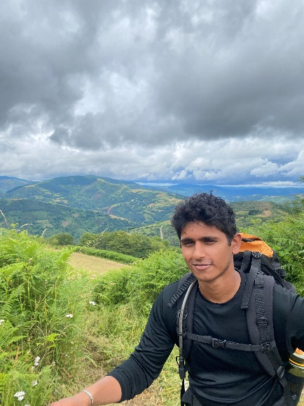

About the Author
Hi, I'm Tareek Thomas

I'm Tareek Thomas, a senior mechanical engineering student at Colorado State University with a focus on automotive and medical device design. My favorite classes have been Internal Combustion Engines and Senior Design, the latter being where I designed reusable nasal swabs for the National Park Service to use on bison. I've also interned at Sansera Engineering, an international auto parts and aerospace manufacturer.
My path into engineering started early and came from taking things apart, not textbooks. In middle school I got into building gaming PCs, which turned into an obsession with understanding every component. Soon I was building PCs for every kid in the neighborhood and had become the unofficial fix it person for my family, repairing appliances and basic electrical problems. That curiosity carried into high school, where I modified my Scion FRS, and senior year I bought and restored a 1978 Datsun 280Z. By the time I got to college, mechanical engineering felt like the obvious next step for someone who'd always rather understand how something works by rebuilding it.
What I enjoy most is that same hands on problem solving, figuring out why something fails and how to make it better, whether that's a car component or a piece of safety equipment. It's part of what drew me to this project on climbing rope degradation.
Looking ahead, I want to gain industry experience before considering graduate school, so I have a clearer sense of what to specialize in. Right now I'm most drawn to automotive chassis design or medical device design, but I expect that focus to sharpen as I get more experience in the field.